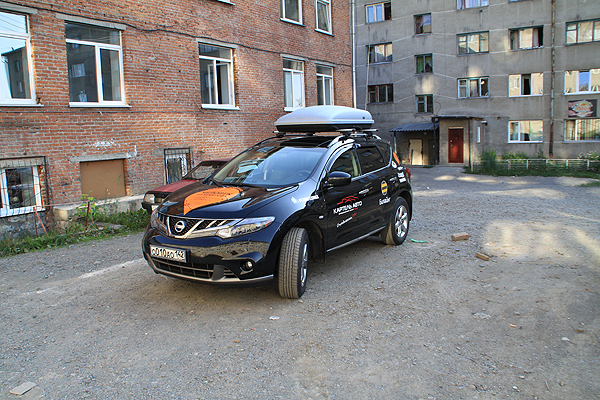

Итак, пролетели 25 дней этнографической экспедиции «Человек из Кемерова». Вообще я довольно долго думал как назвать этот автопробег, аналогов которого не знала моя история, но потом появилось такое название.
Несмотря, на то, что родился я в Ижморке, название ко мне вполне уже применимо, к тому же, как кое-кто знает, является аллюзией к одноимённой песне Бориса Гребенщикова, которая представляет, возможно, кемеровчан в свете, в общем-то, неплохом.
Название придумано, за пару дней родился логотип в виде знакомого пользователям онлайн-карт геомаркера. Сергей Барков чуть покритиковал его, но справедливо, исправлю ).
Ещё одним вопросом было превращение автомобиля в экспедицонный с помощью установки экспедиционного багажника, покупки канистр, усиления подвески, смены шин, установки шноркеля, наклейки наклеек спонсоров. Наклейки спонсоров хотя и не всегда коммерчески, но неслучайны. Я уверен, что несмотря на удалённость Кузбасса от большинства давно оцивилизованных мест, автотуризм есть и должен развиваться. Это не был для меня вопрос денег. Мне было интересно зародить у потенциальных и действительных спонсоров такой интерес, чтобы и предприятия и сами автотуристы понимали, что подобные путешествия могут быть полезны обеим сторонам. Времени было мало, но кое-что сделать всё-таки удалось.

Спонсорами экспедиции стали:
- официальный дилер Nissan в Кемерове компания «Картель-Авто»
- сотовый оператор Билайн
- ЗАО «Резинотехника»
- Сибирская торговая площадка
- интернет-магазин «Пеките с нами»
- компания «Системы промышленной очистки»
Огромное спасибо всем спонсорам, уверен, они не пожалели. Спасибо и журналистам СТС-Кузбасс, которые сняли о нас сюжет и показали его в «Других новостях» в понедельник, 16 июля. Сам сюжет, правда, мы уже не посмотрели, смотрели уже Екатеринбург.
Часто друзья и знакомые говорили мне, что мол так ездить дорого, за эти деньги можно и в Турции хорошо отдохнуть, в ответ замечу, что потраченные деньги я пока не считал, а прошедшее путешествие сложно назвать отдыхом, я вообще слабо представляю как можно отдыхать больше одного дня.
Ещё часто спрашивали, куда я еду. На этот вопрос тоже нет однозначного ответа, мы не ехали никуда, мы ехали везде. Ни в одном городе мы не были больше одного дня.
В первоначальный маршрут внеслись ожидаемые коррективы. Мы решили заехать в Абхазию (так ведь близко оказались) и решили не заезжать в Элисту (дорога длинная и пустынная). Изменился с самого начала и способ ночлега. Предполагалось, что хоть изредка мы будем ночевать в палатке. Но сама палатка, а также три спальника, стол, газовая плитка и два матраса так и остались лежать в багажниках всю дорогу. Мы ночевали в гостиницах и мотелях. Кажется, во всех их разновидностях.
Я, конечно, планировал делать записи в блог непосредственно в ходе поездки, но её ход с первого дня внёс коррективы в эти планы. Времени не хватало катастрофически. Кое-что теперь уже, наверняка, забылось, за вагоном общих впечатлений, но это, думаю и к лучшему. Вам несомненно стоит съездить в подобное путешествие самостоятельно, чтобы получить свои эмоции, ну а я буду писать о своих.
Теперь, обо всём по порядку. Буду рад вопросам и комментариям по ходу.